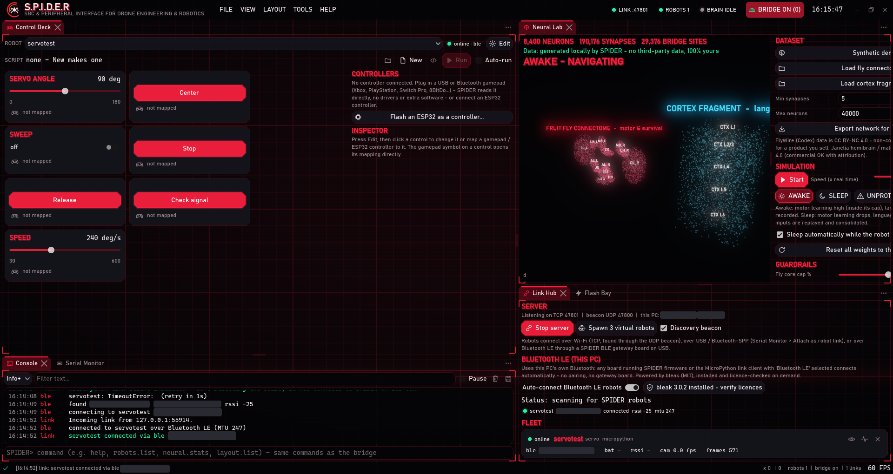
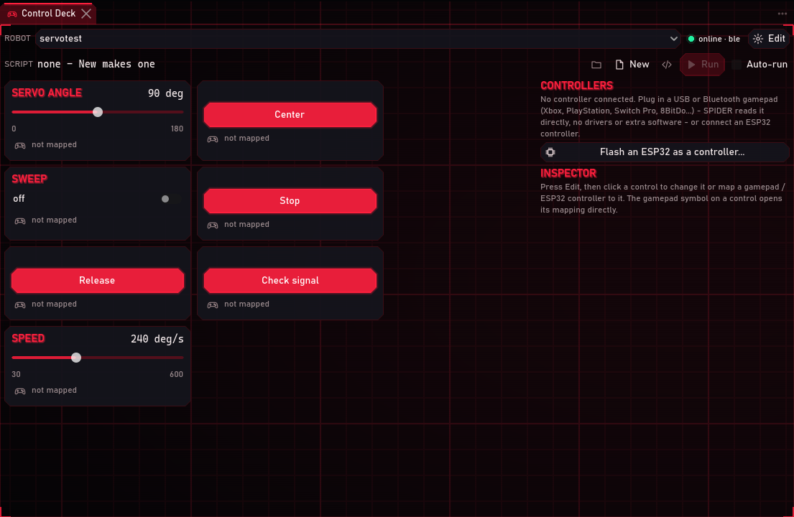
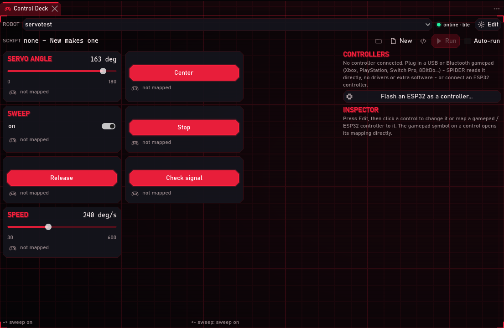
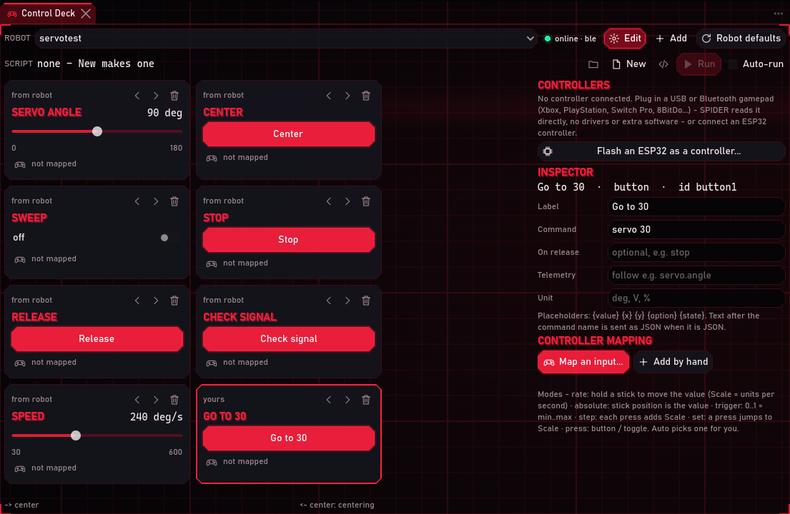
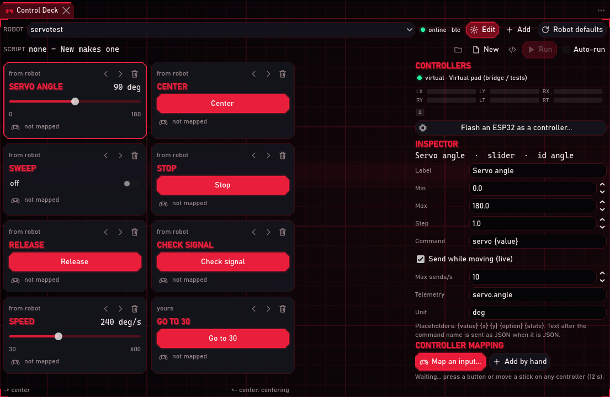
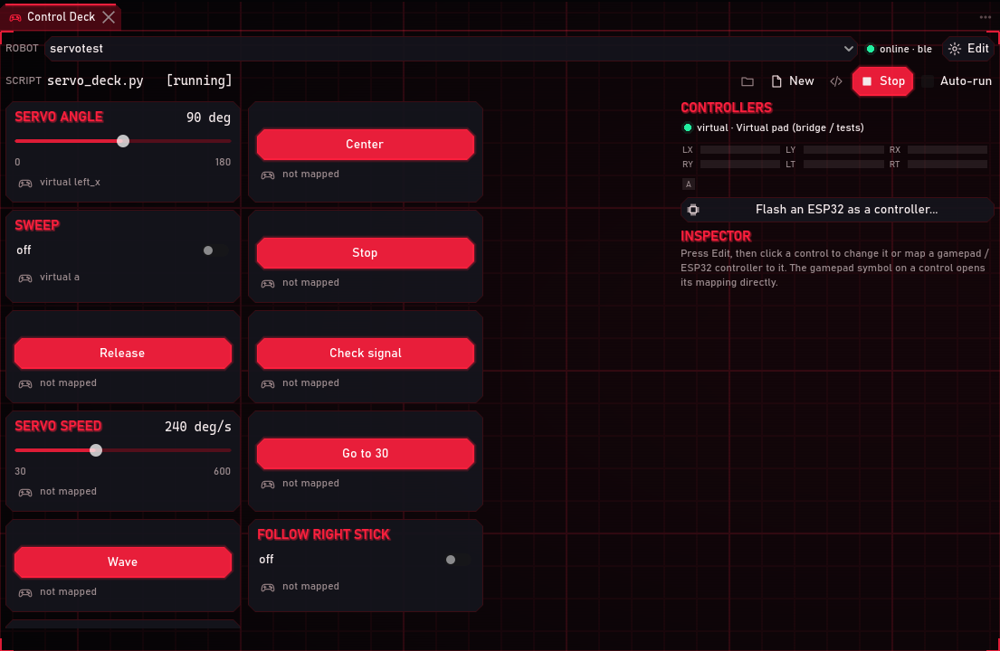
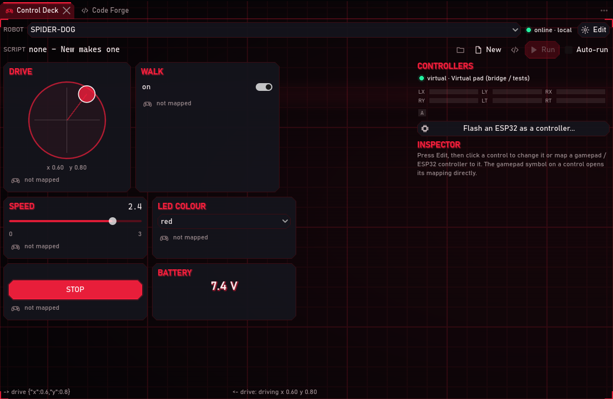
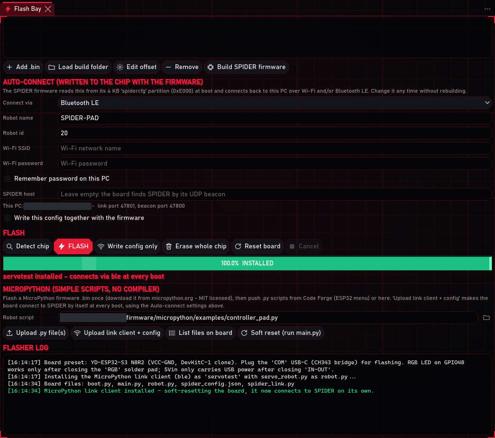
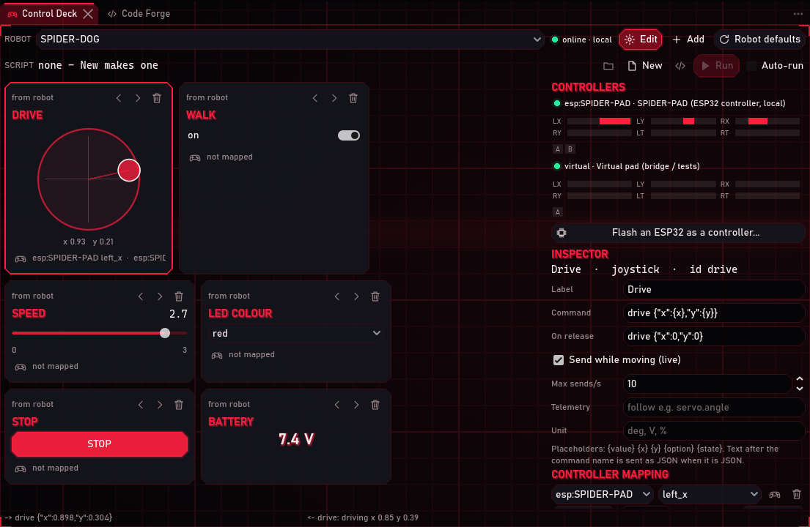

The Control Deck puts on-screen controls for a robot on SPIDER's dashboard. Sliders move servos, buttons send commands, and a joystick drives. You can map any game controller to those controls, or build a controller from an ESP32. When point-and-click is not enough, you program the deck in Python, C# or C++.
Everything in this tutorial was run on 2026-10-07 against real hardware: the MG90S servo robot from
the first tutorial, named servotest here. The robot screen 3D model came from SPIDER's
virtual robots. No physical gamepad was plugged in while the screenshots were taken. The mapping
screenshots use SPIDER's virtual pad, which the bridge drives exactly like a real stick. A real controller
shows up as pad0 · Xbox Controller (or similar) instead of virtual. The ESP32 controller section ran the
controller firmware with simulated sticks on the PC. It has not been tested on a real controller board yet.
1. Open the Control Deck
Use LAYOUT > Control Deck. The deck takes the left side, with the Console and Serial Monitor under it, and the robot's 3D view, Link Hub and Flash Bay on the right. The deck is also part of Robot Ops, and VIEW > Control Deck opens it in any layout. Like every panel, it can be docked anywhere or floated in its own window.

The ROBOT list at the top picks which robot the deck controls. The light next to it shows whether that
robot is online, and over which link (ble, wifi, usb, local).
2. The controls a robot brings with it
A robot can tell SPIDER which controls it wants (see section 7). The servo robot asks for an angle slider, Center, Sweep, Stop, Release and a speed slider:

| Control | What it does |
|---|---|
| Slider | A value between a minimum and maximum, e.g. the servo angle. It sends while you drag (up to 25 times a second) and once more when you let go. The servo script follows a stream of positions at full speed, so the horn keeps up with your hand (measured: within 2° during a fast drag). |
| Button | Sends a command when pressed, and can send another when released. |
| Toggle | On / off, with a command for each. |
| Joystick | Drag the knob. It sends x and y (-1 to 1, up = +1) and springs back to the centre when let go. |
| Option list | Choose one of several options, e.g. an LED colour. |
| Readout | Shows a value the robot reports, e.g. its chip temperature or battery. |
A robot that declares nothing still gets a deck when SPIDER recognises it. Any robot that reports
servo.angle gets servo controls automatically.
3. Use them
Drag Servo angle and the servo follows. Switch Sweep on and the servo sweeps by itself. While nobody is touching the slider, it follows what the robot reports, so it shows where the servo really is:

The line at the bottom of the deck shows the last command sent (-> servo 135) and, on the right, the robot's reply
(<- servo: moving to 135). If the robot is offline it says so, and nothing is sent. The servo robot also has a
Check signal button: it measures the servo signal on the board's own pin, which tells you whether a servo that
does not move is a board problem or a wiring / power problem.
4. Change the deck: edit mode
Press Edit. Each control shows where it came from (from robot, yours, from script), arrows to move it and a bin to remove it. Click a control to open it in the Inspector:

| Field | Meaning |
|---|---|
| Label | The name on the control |
| Min / Max / Step | The slider's range and step |
| Command | What to send. The first word is the command; the rest is its argument. Placeholders are filled in: {value} (the slider value), {x} {y} (joystick), {option} (option list), {state} (on / off). If the argument is valid JSON it is sent as JSON, so drive {"x":{x},"y":{y}} sends an object. |
| Off command / On release | Toggles: what to send when switched off. Buttons and joysticks: what to send when let go (e.g. stop). |
| Send while moving (live) / Max sends/s | Whether a slider or joystick sends while you drag, and how often |
| Telemetry | A value the robot reports that the control should follow when idle, e.g. servo.angle |
| Unit | Shown next to the value (deg, V, %) |
Add (in edit mode) creates a new slider, button, toggle, joystick, option list or readout. Here a
button that sends servo 30 was added, then pressed, and the servo went to 30°:

Your changes save automatically to workspace/decks/<robot name>.deck.json, a plain JSON file you can also edit
in Code Forge. Robot defaults throws your changes away and goes back to the controls the robot declares.
5. Map a game controller
Connect the controller. Plug a USB gamepad in, or pair a Bluetooth one in Windows' Bluetooth settings as you would for any game. Xbox, PlayStation, Switch Pro and 8BitDo controllers all work. SPIDER reads them through Godot's own game controller support, so no drivers or extra software are needed. Each connected controller appears under CONTROLLERS with a live monitor: bars for the sticks and triggers, lit boxes for pressed buttons. It is the quickest way to check that SPIDER sees your controller.
Map an input. Press the small gamepad symbol on a control (or select it in edit mode and press Map an input...). Then move a stick or press a button on the controller. SPIDER maps the first input that moves:

Here the left stick was mapped to Servo angle and button A to Sweep. The mapping appears on the control and in the inspector, where you can change it:

The input you press or push to teach a mapping is ignored until you let go of it, so teaching does not also move the robot.
Now holding the stick to the left turns the servo down; let go and it stays where it is:

Mapping settings (inspector, under Controller mapping):
| Setting | Meaning |
|---|---|
| Source | any (whichever controller moves, the default for gamepads), one gamepad (pad0, pad1...), or an ESP32 controller (esp:NAME). Use a specific source to drive two robots with two controllers. |
| Input | Sticks left_x left_y right_x right_y; triggers trigger_left trigger_right; buttons a b x y back start guide left_shoulder right_shoulder left_stick right_stick dpad_up dpad_down dpad_left dpad_right (Xbox names; on a PlayStation pad A = cross, B = circle, X = square, Y = triangle). Sticks read up = +1. |
| Mode | auto picks one for you. rate: hold the stick to move the value (Scale = units per second; the default moves a servo 135° per second at full tilt). absolute: the stick position is the value (centre = middle of the range). trigger: 0-100 % of the trigger = min-max. step: each press adds Scale (negative to go down; on option lists it moves to the next option). set: each press jumps to Scale (e.g. A = 90°). press: buttons are held while held, toggles flip on each press. |
| Scale | Speed, step size or target value, depending on the mode |
| Invert | Flips a stick's direction |
| x / y | Joysticks only: which axis of the on-screen joystick this input moves |
Stick deadzones are 15 % by default, so a slightly off-centre stick does not creep. A control can have several mappings (e.g. stick for fine control plus D-pad up = 90°). Mappings are saved with the deck.
The deck keeps reading the controller while its tab is in the background. It only stops when the Control Deck panel is closed.
6. Program the deck in Python, C# or C++
A deck script adds its own controls and decides what they do. It runs as a separate program, so a crashing script never takes SPIDER down. SPIDER talks to it in simple text lines (see DECK_SCRIPTS.md).
In the deck's SCRIPT row:
- New creates a starter script in Python, C# or C++ next to the deck file and opens it in Code Forge.
- The folder button picks an existing script;
workspace/decks/has the same servo deck in all three languages:servo_deck.py,ServoDeck.csandservo_deck.cpp. - Run / Stop starts and stops it. Auto-run starts it whenever the deck opens.
The servo deck script adds a speed slider, a Wave button that plays a timed sequence (45° - 135° - 45° - 135° - 90°), a "follow the right stick" toggle and a temperature readout. Its controls appear next to the robot's. A script control with the same name as a robot control stands in for it while the script runs (here the script's Servo speed):

The Python version, as it looks in Code Forge:

The same three lines in each language:
| Python | C# | C++ | |
|---|---|---|---|
| Use the helper | import spider_deck as deck |
using SpiderDeck; |
#include "spider_deck.hpp" |
| Add a slider | deck.slider("angle", "Angle", 0, 180, value=90) |
Deck.Slider("angle", "Angle", 0, 180, value: 90); |
deck::slider("angle", "Angle", 0, 180, 90); |
| React to it | @deck.on("angle")def angle(v): deck.send("servo", v) |
Deck.On("angle", v => Deck.Send("servo", v)); |
deck::on("angle", [](double v) { deck::send("servo", v); }); |
| Buttons | @deck.on("wave")def wave(pressed): ... |
Deck.OnPress("wave", pressed => ...); |
deck::on_press("wave", [](bool pressed) { ... }); |
| Joysticks | @deck.on("drive")def drive(x, y): ... |
Deck.OnStick("drive", (x, y) => ...); |
deck::on_stick("drive", [](double x, double y) { ... }); |
| Timers | @deck.every(0.05) / deck.after(1.0, fn) |
Deck.Every(0.05, dt => ...) / Deck.After(1.0, () => ...) |
deck::every(0.05, ...) / deck::after(1.0, ...) |
| Robot values | deck.telemetry("servo.angle") |
Deck.Telemetry("servo.angle") |
deck::telemetry("servo.angle") |
| Controller | deck.gamepad("right_x") |
Deck.Gamepad("right_x") |
deck::gamepad("right_x") |
| Start | deck.run() |
Deck.Run(); |
return deck::run(); |
print / Console.WriteLine / deck::print text shows in SPIDER's Console. So do errors: a handler that throws
logs the error and the script keeps running.
What runs them (all separate programs; none is bundled into SPIDER):
- Python: your Python 3 install.
- C#: SPIDER compiles it with the C# compiler built into SPIDER (Roslyn) and runs it on the .NET runtime.
- C++: SPIDER compiles it with the C++ compiler on your PC. It finds Visual Studio's compiler by itself (that is what this PC used), or uses clang++ / g++. The program is rebuilt only when the source changes.
7. Give your robot its own controls
A robot sends its controls to SPIDER when it connects. In a MicroPython robot, add a CONTROLS list to robot.py.
This is the servo robot's (servo_robot.py):
CONTROLS = [
{"type": "slider", "id": "angle", "label": "Servo angle", "min": 0, "max": 180, "step": 1, "value": 90,
"cmd": "servo {value}", "telemetry": "servo.angle", "unit": "deg"},
{"type": "button", "id": "center", "label": "Center", "cmd": "center"},
{"type": "toggle", "id": "sweep", "label": "Sweep", "cmd": "sweep on", "off": "sweep off", "telemetry": "servo.sweep"},
...
]
The fields are the same as in the inspector (type, id, label, min, max, step, value, cmd, off,
release, live, rate, telemetry, options, unit). Upload the script again (Flash Bay >
Upload link client + config) and the deck rebuilds itself when the robot reconnects. Controls you changed
yourself win over the robot's until you press Robot defaults.
SPIDER's virtual robots (Link Hub > Virtual robots..., e.g. SPIDER-DOG) declare a joystick, a toggle, a slider, an option list, a button and a battery readout. They are a good way to try every control without hardware:

8. Build an ESP32 controller
Any ESP32 with thumbsticks and buttons can be a controller. It connects to SPIDER like a robot (Bluetooth LE or
Wi-Fi), shows up under CONTROLLERS as esp:NAME, and is mapped exactly like a gamepad. It uses the same input
names, so decks mapped to any work with it too.
Parts: an ESP32 / ESP32-S3 board, up to two analog thumbstick modules (KY-023 / PS2 style) and up to 8 push buttons. Power the stick modules from 3V3, not 5 V: the ESP32's inputs only take 3.3 V.
Default wiring (ESP32-S3; change the tables at the top of
controller_pad.py to match yours):
| Input | Pin | Input | Pin | |
|---|---|---|---|---|
| left stick X / Y | GPIO1 / GPIO2 | A / B / X / Y | GPIO15 / 16 / 17 / 18 (to GND) | |
| left stick click | GPIO12 | left / right shoulder | GPIO8 / GPIO9 | |
| right stick X / Y | GPIO5 / GPIO6 | START / BACK | GPIO10 / GPIO11 | |
| right stick click | GPIO13 |
Sticks must be on GPIO1-GPIO10 (the converter that keeps working while Bluetooth or Wi-Fi is on). Each button goes between its pin and GND; no resistors are needed.
Flash it:
- Flash MicroPython onto the board exactly as in the first tutorial, steps 2-7.
- In the Control Deck press Flash an ESP32 as a controller.... Flash Bay opens with Bluetooth LE, the name
SPIDER-PAD, id 20 andcontroller_pad.pyas the robot script filled in:

- Pick the controller board's serial port and press Upload link client + config.
- Keep the sticks still for the first second after power-up: that is when their centre is measured.
The
calibratecommand does it again later.
The controller connects, appears under CONTROLLERS with its live monitor, and is mapped like any gamepad. Here its left stick drives a virtual robot's joystick:

It sends its inputs 25 times a second (TELEMETRY_MS = 40). Controllers do not get a robot screen.
9. Automate it
Every deck action is also a bridge command, for scripts and for Claude:
python tools/spider_bridge.py deck.state
python tools/spider_bridge.py deck.set id=angle value=120
python tools/spider_bridge.py deck.map id=angle input=left_x mode=rate scale=90
Others: deck.select, deck.press, deck.stick, deck.add, deck.remove, deck.learn, deck.unmap,
deck.reset, deck.script, deck.script_new, deck.script_stop, deck.flash_controller, and deck.input
(drives the virtual pad). Commands that move a robot are hardware actions: S.P.I.D.E.R. asks you first in a window
(Allow once / Allow until S.P.I.D.E.R. closes / Deny), unless the Bridge panel's Allow hardware actions is ticked
or SPIDER was started with --bridge-hw.
Troubleshooting
| Symptom | Fix |
|---|---|
| The deck moves but the servo does not | Press Check signal. signal OK means SPIDER and the board work, and the cause is wiring (unsoldered headers, wrong pin, no common ground) or servo power. See The servo does not move in the first tutorial. |
| My controller is not under CONTROLLERS | USB: try another cable or port. Bluetooth: pair it in Windows first. Check that it works in Windows' Set up USB game controllers (joy.cpl). Controllers plugged in while SPIDER runs appear within a second. |
| Map an input... does nothing | Nothing moved far enough within 12 s. Push the stick all the way or press the button firmly, then try again. |
| Mapped, but nothing happens | The robot is offline (see the light next to its name), or the mapping is for a specific source (pad1, esp:...) other than the controller you are using. Set Source to any. |
| A stick creeps by itself | Raise the deadzone in the deck file ("deadzone": 0.25), or use absolute mode. |
| Script: No Python / C++ compiler found | Install Python 3, or Visual Studio with Desktop development with C++ (or LLVM clang / MinGW g++), or set the paths in Settings > Tools. |
| Script errors | They show in the Console with file and line. A broken C# or C++ script does not start; fix it and press Run again. |
| SPIDER says "running on Godot 4.4.1" | Start SPIDER with Run SPIDER.cmd (or Open SPIDER in Godot 4.7.2.cmd for the editor). An older Godot runs it half-broken. |